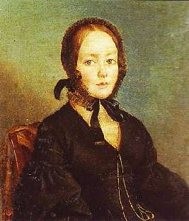

Борис Акунин
Мой календарь
Иногда для того, чтобы войти в анналы, попасть на скрижали и даже стать гением чистой красоты, нужно просто оказаться в нужное время в нужном месте и попасться на глаза правильному человеку.
Сегодня отмечаем день рождения самой прославленной женщины всей русской поэзии - Анны Керн (1800–1879), которая вообще-то была малоинтересной, легкомысленной особой и кому только не дарила «чудные мгновенья».
Даме просто повезло. За ней приволокнулся гений и под настроение написал великое стихотворение. Знаем мы поэтов: они влюбляются в музыку слов. Наверное, придумал чудесное сочетание «гений чистой красоты», а тут как раз интрижка с Анной Петровной. (Как известно, в частной переписке Александр Сергеевич отзывался об этом «мгновеньи» весьма неромантическим образом).
Это совершенно особый вид везения: оказаться там, где на тебя по магическому стечению обстоятельств, безо всяких твоих заслуг, вдруг падает космический луч, и ты озаряешься волшебным сиянием.
Сегодня не следует сидеть дома. День сулит чудные мгновенья. Общайтесь с людьми, ведите активный образ жизни. Есть шанс, что вы окажетесь там, где происходят чудеса - или рядом с тем, кто творит чудеса.